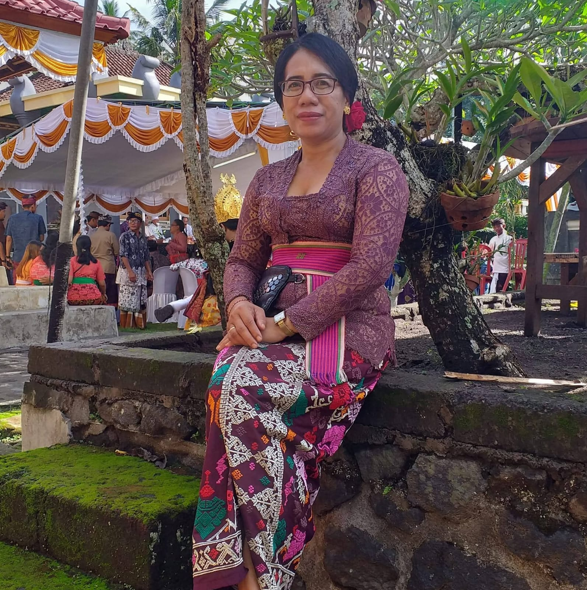
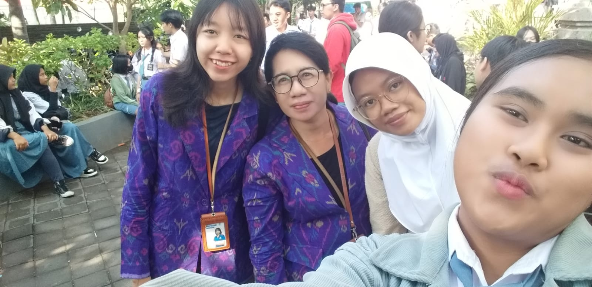
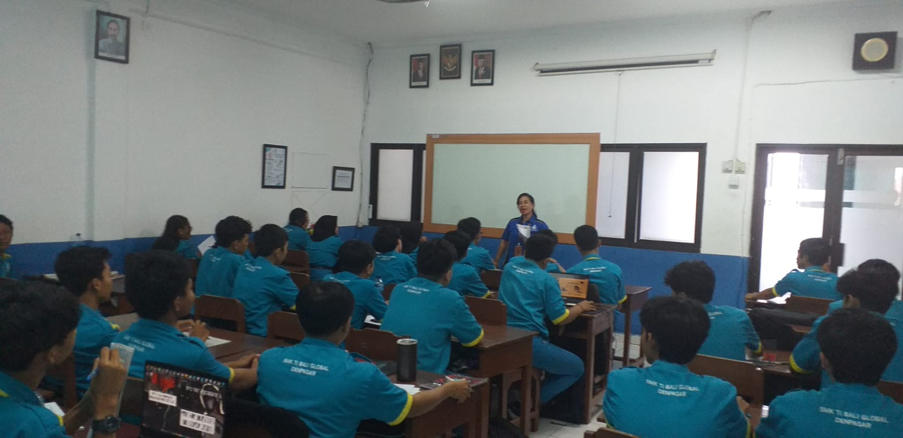
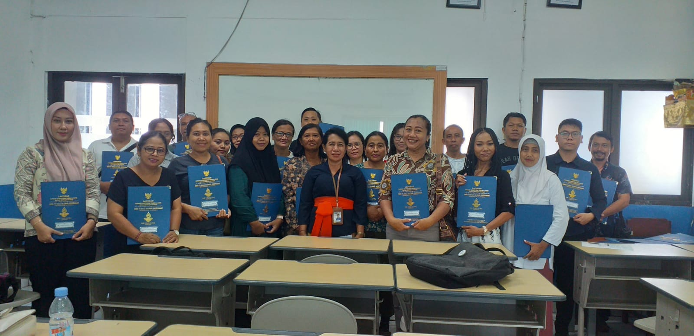
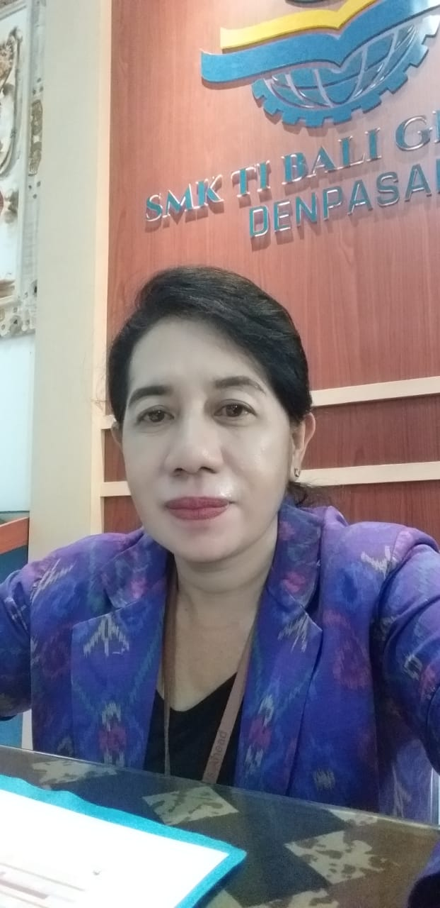

Tim Pewawancara
Kelompok Kami
Siswa SMK TI yang menyusun portfolio ini dengan penuh semangat
Gery
Aristyawati
Marvin
Arfa
Friski
Jampe
Mohamad
Lebih dari 18 tahun beliau mengabdikan diri dalam dunia pendidikan, membentuk karakter dan masa depan generasi muda melalui mata pelajaran Pendidikan Pancasila.
Hubungi Saya
Dra. I Made Ayu Adyani lahir pada 11 Agustus 1967 di Karangasem, Bali, dari keluarga yang memiliki latar belakang kuat di bidang pendidikan. Ia tumbuh sebagai bagian dari lima bersaudara, salah satunya kini menjadi seorang dosen. Lingkungan keluarga tersebut membentuk dirinya menjadi pribadi yang menghargai ilmu pengetahuan sekaligus menjunjung tinggi kebersamaan.
Perjalanan pendidikannya dimulai dan diselesaikan di Bandung, dari tingkat Sekolah Dasar hingga perguruan tinggi. Pengalaman merantau sejak usia muda membentuk karakter yang mandiri, tangguh, serta mampu beradaptasi dengan berbagai situasi. Nilai-nilai tersebut kemudian menjadi bagian penting dalam kehidupan pribadi maupun dalam metode pengajarannya.
Perjalanan menjadi seorang guru bermula dari saran seorang teman baik. Apa yang awalnya merupakan sebuah kesempatan, kemudian berkembang menjadi panggilan hidup yang dijalani dengan penuh dedikasi. Hingga kini, beliau telah mengabdi selama lebih dari 18 tahun sebagai guru Pendidikan Kewarganegaraan di SMK TI, sebuah perjalanan panjang yang penuh makna dan kebanggaan.
"Fokuslah ke depan. Masa lalu cukup untuk dikenang, bukan untuk dibawa. Jadikan ia pelajaran, bukan beban."
Momen-momen berharga dalam perjalanan hidup dan karir Bu Ayu




Masa lalu cukup untuk dikenang, bukan untuk dibawa. Pandanglah selalu ke depan dengan tekad dan optimisme yang kokoh.
Setiap generasi siswa membawa warna baru. Kemampuan beradaptasi adalah kunci seorang guru yang terus relevan dan berdampak.
Kebanggaan sejati bukan tentang penghargaan pribadi, melainkan saat menyaksikan setiap murid berhasil meraih tujuan mereka.
Siswa SMK TI yang menyusun portfolio ini dengan penuh semangat
Saya terbuka untuk diskusi, kolaborasi pendidikan, atau sekadar berbagi cerita dan pengalaman mengajar bersama.